Documentation / Performance Dashboard
Performance Dashboard
Monitor the performance of your web site using the performance dashboard.
- Using Docker compose
- Example dashboards
- Configure running your tests
- Configure Graphite
- Using S3 for HTML and video
- Annotations
- Production Guidelines
Using Docker compose #
If you don’t use Grafana/Graphite already, we have prepared a Docker Compose file that downloads and sets up Graphite/Grafana with a couple of example dashboards. It works perfectly when you want to try it out on localhost, but if you want to run it in production, you should modify it by making sure that the metrics are stored outside of your container/volumes. If you prefer InfluxDB over Graphite, you can use that too, but there’s no pre made dashboards.
Pre-Requirements #
Before you start, make sure you have the following installed:
- Docker: You can download Docker from the official Docker website.
- Docker Compose: Docker Compose is included in the Docker Desktop for Windows and Docker Desktop for Mac. For Linux, you might need to install it separately.
- Git: You can download Git from the official Git website.
- sitespeed.io installed globally.
- If you haven’t used Docker before, you can read Getting started. And you can also read/learn more about Docker Compose to get a better start.
Instructions #
Clone the Repository
Open a terminal window and clone the
sitespeed.iorepository by running the following command:git clone https://github.com/sitespeedio/sitespeed.io.gitNavigate to the Docker Directory
Navigate to the
dockerdirectory in the cloned repository:cd sitespeed.io/dockerRun Docker Compose
In the terminal, run the following command:
docker-compose upThis command will download the necessary Docker images and start the Grafana and Graphite.
Add example data
To push data for the page metric dashboard (the most important dashboard) you can run a test like this:
sitespeed.io https://www.sitespeed.io -n 1 --slug myTest --graphite.host 127.0.0.1Access Grafana
Once the services are up and running, you can access the Grafana dashboard by opening a web browser and navigating to
http://localhost:3000. If you want to edit the dashboards, the default login is sitespeedio and password is …well check out the docker-compose.yml file.Stop docker compose
When you’re done, you can stop the services by pressing
Ctrl+Cin the terminal where you randocker-compose up. To completely remove the services and volumes defined in thedocker-compose.ymlfile, you can rundocker-compose down.
Remember, these are simplified instructions. For a production setup, you would need to make additional configurations, such as setting up persistent storage and securing the Grafana dashboard.
Pre-made example dashboards #
We insert ready-made dashboards with our docker compose file using provisioning. You can checkout the compose file and use it as an example.
Some of our dashboards uses Grafana plugins. To make sure the dashboards work you need to install these plugins:
In our Docker file you can see something like this:
environment:
- GF_INSTALL_PLUGINS=marcusolsson-json-datasource,marcusolsson-dynamictext-panel
...
The Page metrics dashboard shows meta data like settings/video/screenshots. To get that dashboard to work correctly, you need to push the result of your test to S3 or a web server and setup the dashboard to point to where you store the sitespeed.io result.
In our example dashboard we serve our content from https://data.sitespeed.io so we configure the variable resulturl for the dashboard to point to that like this. That way we will see screenshots and videos in the dashboard.
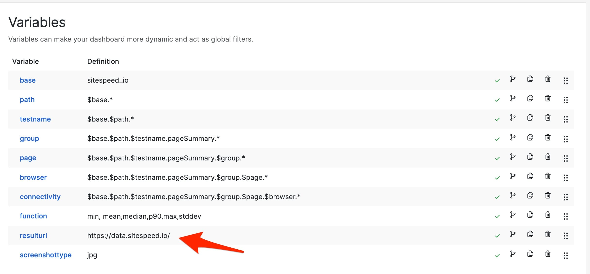
We also configure the JSON datasource to point to the same place. That way we can see meta data like how you configured your tests.
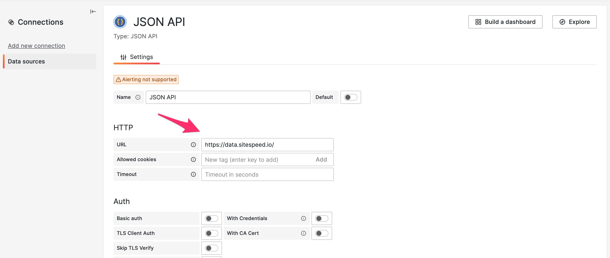
If that is setup correctly your dashboard will look something like this:
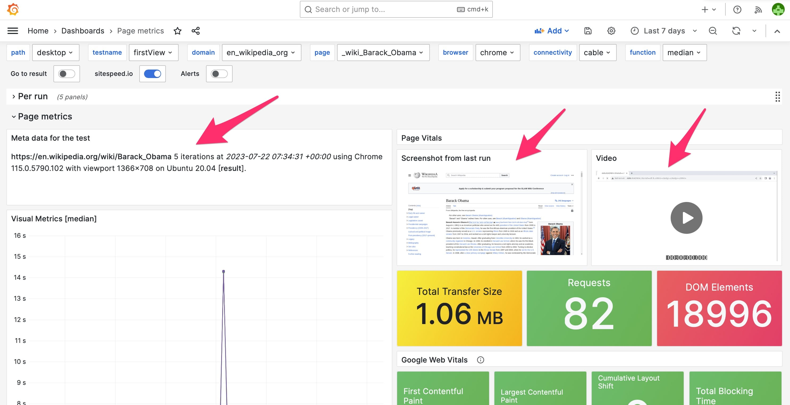
Example dashboards
The example dashboards are generic dashboards that will work with all data/metrics you collect using sitespeed.io. We worked hard to make them and the great thing is that you can use them as base dashboards to create additional dashboards if you like.
The dashboards have a couple of templates/variables (the dropdowns at the top of the page) that make the dashboards interactive and dynamic. A dashboard that shows metrics for a specific page has the following templates:
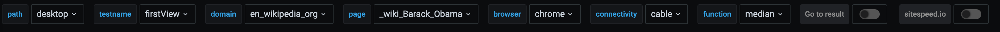
The path is the first path after the namespace. Using the default values, the namespace looks like this: sitespeed_io.default.
The testname is the the slug that you give to your test. Make sure to run your test with --slug yourTestName --graphite.addSlugToKey true so that the slug is added to Graphite and the default dashboards work.
If you choose one of the values in a template, the rest will be populated. You can choose from checking metrics for a specific page, browser, and connectivity.
The default namespace is sitespeed_io.default and the example dashboards are built upon a constant template variable called $base that is the first part of the namespace (that default is sitespeed_io but feel free to change that, and then change the constant).
Page metrics #
You should use these as example dashboards to inspire you what you can do. We try to squeeze in all data in these dashboards and you can view those by expanding each row.
The page metrics shows metrics for a specific URL/page.
The dashboards looks something like this:
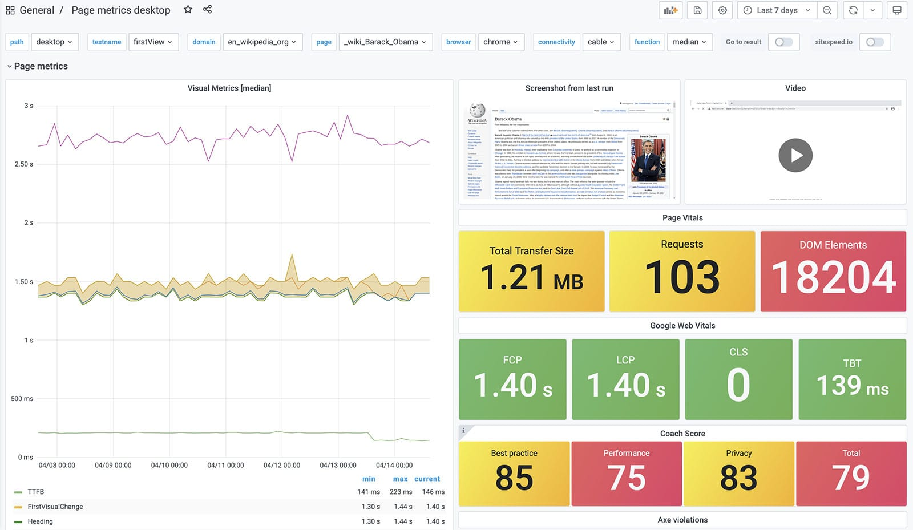
And scroll down to see more, do not forget to click on the rows to expand and see all metrics.
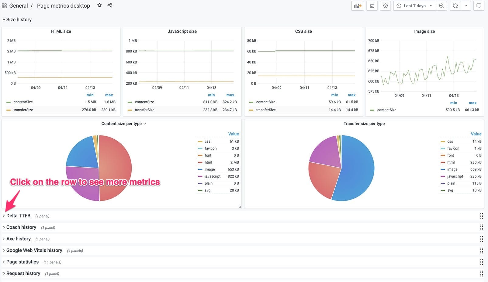
User Journeys example dashboards #
We have a couple of example dashboards on how to add your own user journeys dashboards. When you import those dashboards into Grafana you need to add the Grafana variables that match your tests.
This is an example dashboard login into Wikipedia. That user journey measure four pages.
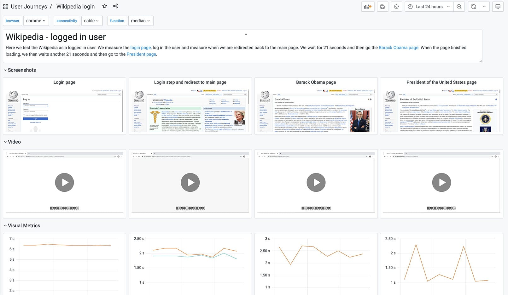
We also have examples that take three pages.
The leaderboard #
We are so proud of our leaderboard dashboard that it got its own documentation page. Use the dashboard if you want to compare different sites or URLs.
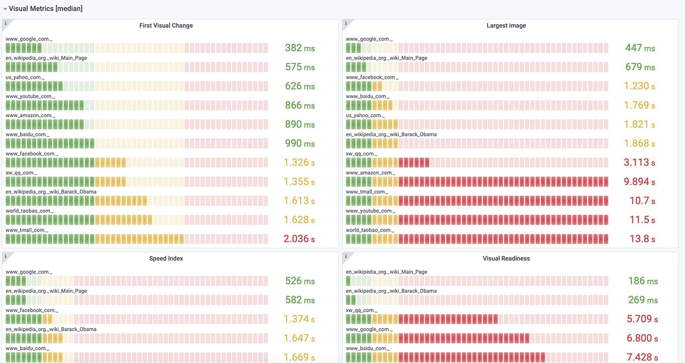
Chrome User Experience Report #
Using our Chrome User Experience Report plugin you can get the metrics Chrome collects from real users. We have a ready made dashboard where you can look at the data on URL and origin level.
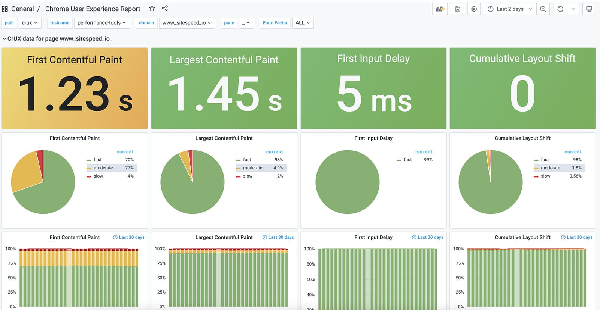
Whatever you want #
Do you need anything else? Since we store all the data in Graphite and use Grafana you can create your own dashboards, which is super simple!
If you are new to Grafana you should checkout the basic concepts as a start. Grafana is used by Cern, NASA and many many tech companies like Paypal, Ebay and Digital Ocean and it will surely work for you too :)
You can configure all the thresholds (green/yellow/red) so that they match your needs:
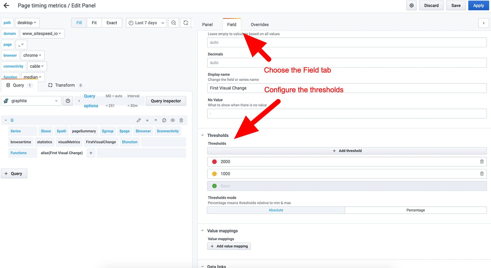
How to get the latest video/screenshot visible in Grafana #
To get the screenshot and video visible in Grafana you need to:
- Set a
--resultBaseURLand the value need to match the Grafana variable resulturl - Set
--copyLatestFilesToBase true. That will make a copy of the last screenshot and video in the base directory so it can be found by Grafana. - Add a testname/slug to your test with
--slug. - Make sure that the screenshot content type
--screenshot.typematches screenshottype variable in Grafana. By default the screenshot type is png.
If you add all that it should work.
In the Grafana panel the path to the screenshot is generated by: $resulturl/$testname/$group.$page.$browser.$connectivity.$screenshottype
And the video: $resulturl/$testname/$group.$page.$browser.$connectivity.mp4
If you can’t see the screenshot or the video you can debug it by either inspect the HTML in Grafana, check the network log in devtools (to see if the full URL is correct) or add <div>$resulturl/$testname/$group.$page.$browser.$connectivity.$screenshottype</div> to the panel so you can see the generated URL.
Setup your own user journey dashboard #
When you import that dashboard you need to add the correct variables. For the login user journey we meausure four pages. When you import that dashboard into Grafana it will look something like this:
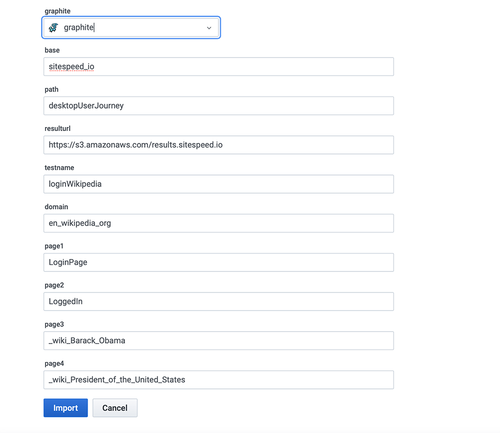
You need to define those variables with the configuration you use:
- graphite - your Graphite instance where you store the metrics.
- base - the first part of your
--graphite.namespace - path - the second part of your
--graphite.namespace - resulturl - the URL where you display the result, the same setting as
--resultBaseURL - testname - the name of the test, the value of the
--slugparameter - domain - The domain of the pages you test. To work in Graphite the dots are changed to underscore.
- page1 - The name of the first page. If you use an alias, that is the correct name to use else is the path and page. If you struggle to get this right you can just look in Graphite/Grafana to see what
- page2 - The name of the second page.
- page3 - The name of the third page.
- page4 - The name of the fourth page.
And then if you need to change it later on you can go into the variable section in Grafana.
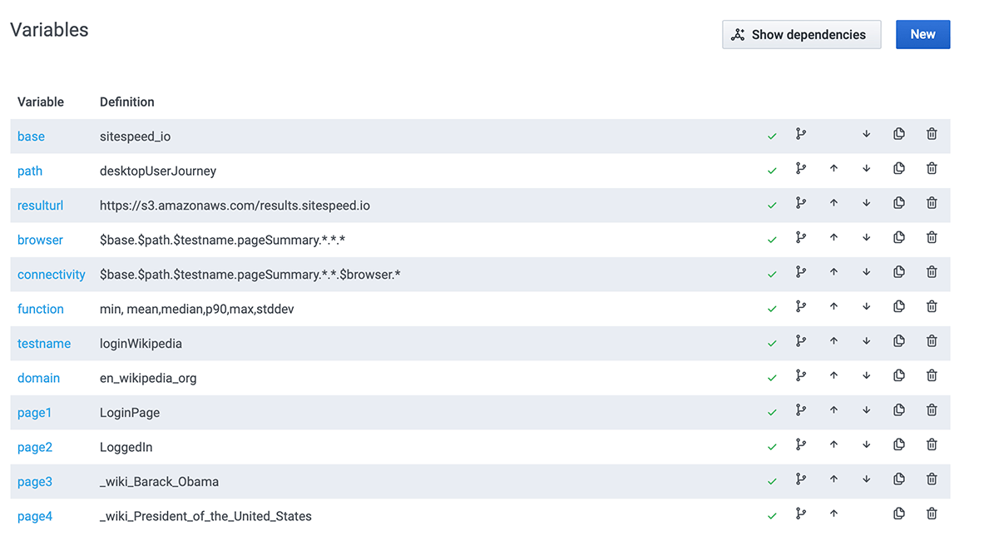
Configure running your tests
No that you have the dashboards you need to collect metrics. You can collect metrics on one or multiple servers. Do not do it on the same server as the dashboard setup since you want to have an as isolated environment as possible for your tests.
Go to the documentation on how to continuously run your tests and learn how you can do that.
If you run the tests on a standalone server, you need to make sure your agents send the metrics to your Graphite server. Configure --graphite.host to the public IP address of your server. The default port when sending metrics to Graphite is 2003, so you don’t have to include that.
Configure Graphite
We provide an example Graphite Docker container for non-production purposes. If you want to put that into production, you need to change the configuration. Check out our own Graphite documentation.
Using S3 for HTML and video
You can store the HTML result on your local agent that runs sitespeed.io, or you can dump the data to S3 or GCS and serve it from there. To use S3, you first need to set up a S3 bucket. For GCS follow the instructions to set up a Google Cloud storage (GCS) bucket.
Then you configure sitespeed.io to send the data to S3 by configuring the bucket name (and AWS key/secret if that’s not available on your server). For GCS you need to provide the name of the bucket, service account key and the project id.
Now, you have the result on S3 or GCS and you’re almost done. You should also configure sending annotations to Graphite for each run.
Annotations
You can send annotations to Graphite to mark when a run happens, that you can go from the dashboard to any HTML-results page.
You send annotations by configuring the URL that will serve the HTML with the CLI param resultBaseURL (the base URL for your S3 or GCS bucket) and configure the HTTP Basic auth username/password used by Graphite. You can do that by setting --graphite.auth LOGIN:PASSWORD.
You can also modify the annotation, append your own text/HTML and add your own tags. Append a message to the annotation with --graphite.annotationMessage. That way you can add links to a specific branch or whatever you deem helpful to you. If needed, set a custom title with --graphite.annotationTitle instead of the default title that displays the number of runs of the test.
You can add extra tags with --graphite.annotationTag. For multiple tags, add the parameter multiple times. Just make sure that the tags don’t collide with our internal tags.
Production Guidelines
Here are a couple of things you should check out before you setup sitespeed.io for production.
Setup (important!) #
To run this in production (=not on your local dev machine) you should make some modifications:
- Always run sitespeed.io on a stand-alone instance
- This avoids causing discrepancies in results, due to things like competing resources or network traffic. Then you just run sitespeed.io with docker run …
- Run Grafana/Graphite on another server instance (only docker compose for Graphite/Grafana).
- Change the default user and password for Grafana.
- Change the default user and password for Graphite.
- Make sure you have configured storage-aggregation.conf in Graphite to fit your needs.
- Configure your storage-schemas.conf to set how long you want to store your metrics.
- MAX_CREATES_PER_MINUTE is usually quite low by default in carbon.conf. That means you will not get all the metrics created for the first run, so you can increase it if you want to. 7, Make sure you disabled tags in Graphite using ENABLE_TAGS = False, see example.
- Map the Graphite volume to a physical directory outside of the Docker container to have better control (both Whisper and graphite.db). Map them like this on your physical server (make sure to copy the empty graphite.db file):
- /path/on/server/whisper:/opt/graphite/storage/whisper
- /path/on/server/graphite.db:/opt/graphite/storage/graphite.db
- Remove the sitespeedio/grafana-bootstrap from the Docker compose file, you only need that for the first run.
- Optional: Disable anonymous users access in Grafana.
System Requirements / Memory & CPU #
To ensure smooth performance while running tests with sitespeed.io, it is important to have sufficient memory for Chrome and Firefox, as they can require a significant amount of memory for certain websites. In the past, we have used an $80 instance on Digital Ocean (8GB memory, 4 Core processors), but currently, we use a bare metal server at Hetzner for our dashboard.sitespeed.io. We have found that bare metal servers provide the most stable metrics.
In summary, for optimal performance, your test environment should have the following minimum hardware specifications:
- 8GB Memory
- 4 CPUs
If you test a lot of pages (100+) in the same run, your NodeJS process may run out of memory (default memory for NodeJS is 1.76 GB). You can change and increase the NodeJS max memory per process by setting MAX_OLD_SPACE_SIZE:
docker run -e MAX_OLD_SPACE_SIZE=4096 --rm -v "$(pwd):/sitespeed.io" sitespeedio/sitespeed.io:38.6.0 https://www.sitespeed.io/
Cost #
Sitespeed.io is an open-source tool that is completely free to use. However, there are some costs associated with running an instance of the tool.
For optimal performance, we recommend using a bare-metal server from Hetzner. This is what we use for our own instances and it is available for less than $500 per year.
Alternatively, you can use an AWS instance c5.large, with an upfront price of $515 per year. Or you can use an optimized Droplet for $40 a month from Digital Ocean.
You will also need to pay for S3 storage to store the videos and HTML or choose to host them yourself.
Overall, the cost of running an instance of Sitespeed.io will depend on your specific setup and usage. However, with the flexibility of the cloud hosting providers, you can scale up or down as needed, so you only pay for what you need.
If your organization already uses Graphite/InfluxDB and Grafana, continue using them. If not, you will need to set up a server to host them. Hosting costs can be around $20 per month on platforms such as Digital Ocean. Keep in mind that the amount of storage needed may vary based on the amount of metrics being collected and how long they are being stored for. Remember to always backup your data.
The number of runs that can be done per month can vary depending on the service being used. Some paid services charge per run or have a limit on the number of runs. Our organization uses one instance on AWS and can perform 11 runs for 9 different URLs, followed by 5 runs for 4 other URLs. This results in a total of 119 runs per hour, 2856 runs per day, and 85680 runs per month. Keep in mind that these numbers are based on testing Wikipedia on our instance and your site may be slower, resulting in a lower number of runs per month.
Total cost:
- $515 per AWS agent or $480 on Digital Ocean (80000+ tests per month per agent) per year
- S3 $10-15 with data
- Server for Graphite/Grafana
You also need to think of the time it takes for you to set it up and upgrade new Docker containers when there are new browser versions and new versions of sitespeed.io. Updating to a new Docker container on one server usually takes less than 2 minutes :)